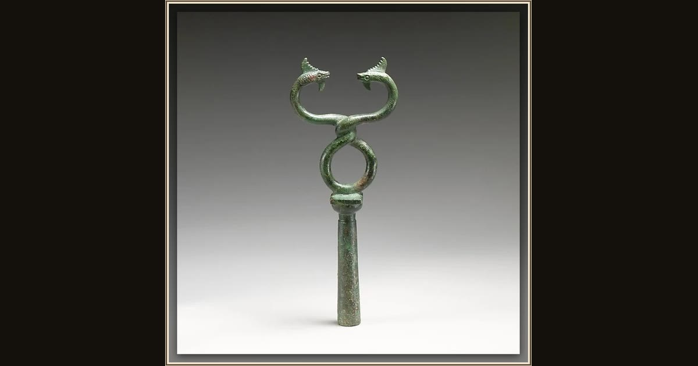

Bronze finial of a kerykeion (herald's staff)
Unknown · late 6th–early 5th century BCE · The Metropolitan Museum of Art
Talthybius and Idaeus hold their staffs between Hector and Ajax, and Idaeus calls for the duel to end (7.277–279). This bronze top belonged to a herald’s staff. Explore its place in Homer's Iliad, Book VII, line 277.